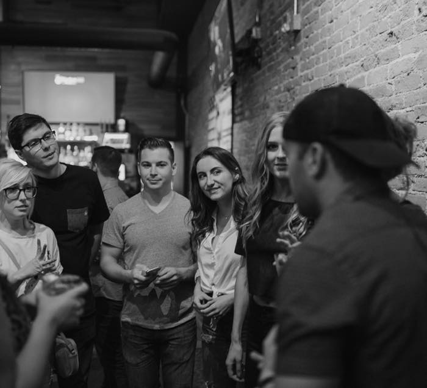

Libre Cours, des rencontres de quartier
Faire ensemble, ça commence en bas de chez vous.
Le temps d'une rencontre, dans un lieu de votre quartier, on échange des idées, des envies, des manières de voir le monde, avec des gens qui vivent à deux rues de chez vous. Pas besoin d'être expert, membre ou invité de quelqu'un. Habiter à côté suffit.
Ça se passe comme ça.

La question au mur
Que faudrait-il à ce quartier pour qu'on y reste ?
On pousse la porte.
Un café, une médiathèque, un atelier. Un verre, et une question au mur.
On s'assoit entre voisins.
Ceux qu'on n'a jamais croisés, et ceux qui tiennent le lieu. Tout le monde participe.
On imagine ensemble.
Chacun pose ses idées. On garde celles qui nous font quelque chose.
Rien ne se perd.
Tout est noté et remis au lieu. La prochaine rencontre en reparle.
Parler beaucoup, un peu, ou juste écouter : les trois font l'affaire.
Quelques jours plus tard, vous recroisez ces visages à la boulangerie. C'est là que le quartier commence à changer.
Ce que ça fait.
Penser tout haut.
Au travail on joue un rôle, en ligne on scrolle ou on s'écharpe. Ici, on peut dire « je ne sais pas », changer d'avis, essayer une idée à voix haute. C'est devenu rare, et ça fait un bien fou.
Rencontrer son quartier.
Les gens qui vivent à cent mètres de chez vous ont des vies, des idées et des talents dont vous n'avez aucune idée. Une table et une question suffisent pour que ça change.
Se rappeler qu'on peut.
Poser une idée devant d'autres et la voir reprise, complétée, partagée, ça réveille. On repart avec l'envie de s'y mettre, à son échelle, pour voir ce qui arrive.
Rien à vendre, rien à prouver, personne à convaincre. Juste un moment où votre voix compte.
On se retrouve où ?
Annonce bientôt.
Me prévenirTrois choses à savoir.
C'est à prix libre.
Chacun donne ce qu'il veut en partant, y compris rien. Personne ne reste dehors pour une question d'argent.
C'est accueilli par des lieux qui jouent le jeu.
Chaque rencontre se tient dans un lieu du quartier qui ouvre ses portes : le temps d'une soirée, le café d'en bas devient la maison de quartier. On choisit le lieu ensemble, on écrit la question avec lui.
On ne fait pas semblant.
On ne vous promet pas de grands soirs : une rencontre est une rencontre. Mais ce qui s'y dit est écouté et gardé. Le lieu reçoit le portrait de la rencontre, et quand un sujet résonne avec son équipe, il peut se mettre en marche avec elle. Pas de boîte à idées qui finit à la poubelle.
Pourquoi Libre Cours ?
Parce qu'on vient y donner libre cours à ce qu'on pense, à ce qu'on imagine, à ce qu'on n'ose pas dire ailleurs. Et parce qu'il y a une cour cachée dedans : celle de la récré, celle de l'immeuble. Le dernier endroit où l'on savait faire ensemble sans mode d'emploi. On en rouvre une, pour les grands.
Vous avez un lieu ?
Un café, une salle, un atelier, et l'envie d'accueillir une rencontre chez vous.
Accueillir un Libre CoursVous voulez aller plus loin ?
Installer ce genre de démarche dans votre structure ou votre quartier, dans la durée.
Voir comment